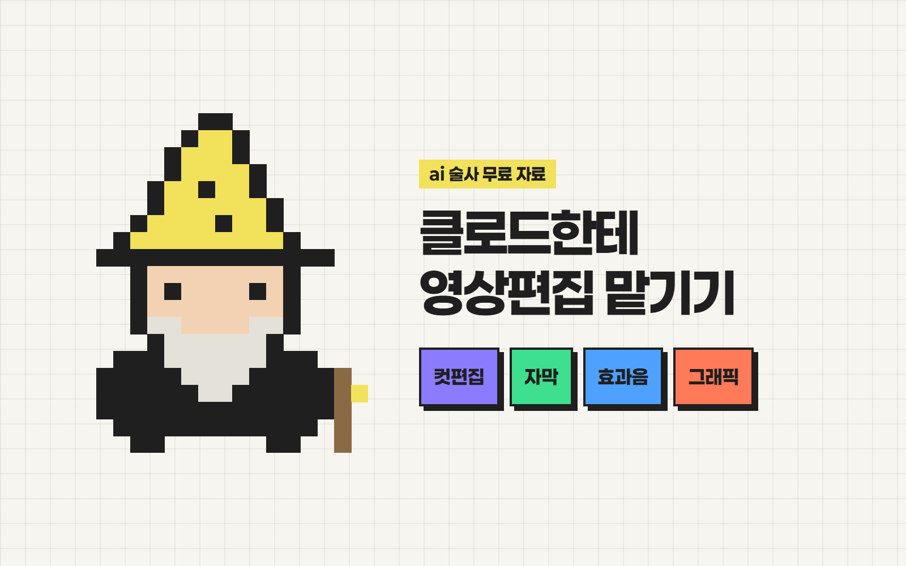
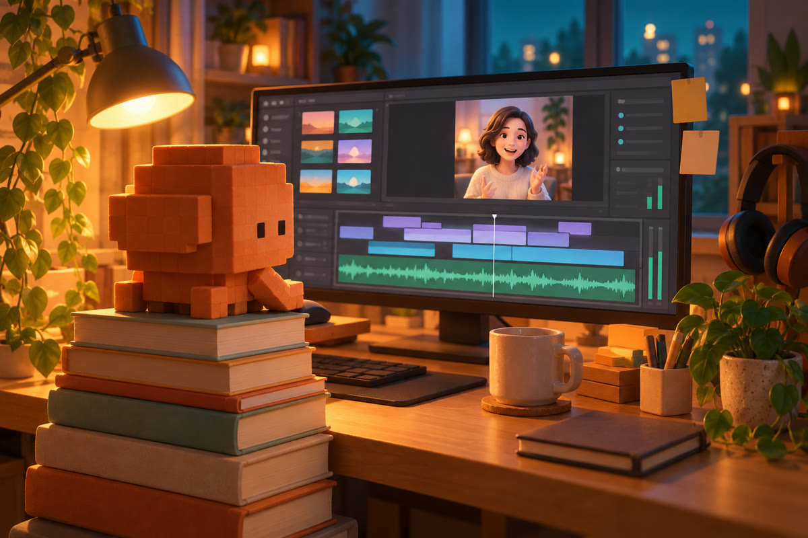

안녕하세요 ai 술사 성준입니다.
클로드한테
영상편집 맡기는 법
그냥 "편집해줘" 하면
자막만 덩그러니, AI 티 나는 영상이 나와요.
그래서 따라 하고 싶은 영상(레퍼런스)을 보여주면
그 스타일 그대로 입혀주는 스킬을 만들었어요.
프리미어, 캡컷 몰라도 돼요!

준비물
- 1Claude Code (Pro 플랜 이상)
- 2Node.js 18 이상 · nodejs.org
- 3내 촬영본 + 따라 하고 싶은 레퍼런스 영상
편집 스킬 설치
레퍼런스를 분석해서 컷·자막·효과음을 맞춰줘요.
- 1아래 문장을 클로드 코드에 그대로 보내요.
https://joony1478-cloud.github.io/ai.magician/scrolls/video-edit/shorts-style-match.zip 이 파일을 받아서 클로드 코드 스킬로 설치해줘. 필요한 ffmpeg, 파이썬, faster-whisper도 전부 설치해줘.
"실행해도 될까요?" 물어보면 허용을 눌러주세요. 직접 받고 싶으면 여기서 다운로드.
설치가 끝나면 클로드 코드를 껐다 켜요.
모션그래픽 스킬 설치
HeyGen이 공개한 영상 엔진, HyperFrames의 공식 스킬이에요.
- 1클로드 코드에 이렇게 보내요.
터미널에서 npx hyperframes skills 실행해서 HyperFrames 스킬 설치해줘. 끝나면 npx hyperframes doctor로 확인까지 해줘.
doctor에서 전부 체크 뜨면 끝이에요.
편집 맡기기
영상 두 개를 작업 폴더에 넣고, 한 문장이면 돼요.
- 1레퍼런스 영상과 촬영본을 작업 폴더에 넣어요.
- 2효과음을 쓰려면 효과음 폴더도 같이 넣어요.
- 3아래 문장에서 파일 이름만 바꿔서 보내요.
레퍼런스.mp4 스타일 분석해서 촬영본.mp4 편집해줘. 컷 리듬이랑 자막 스타일은 레퍼런스랑 똑같이, 효과음은 효과음 폴더에서 골라 넣고, 설명하는 부분엔 모션그래픽도 넣어줘.
효과음이 없으면 Pixabay 무료 효과음에서 "pop", "whoosh", "ding" 몇 개만 받아두세요.
처음 한 번은 받아쓰기 모델(약 1.6GB)을 받느라 오래 걸려요.
말로 다듬기
마음에 안 드는 부분은 그냥 말하면 다시 뽑아줘요.
자막 좀 더 크게 해줘
말 속도 조금만 느리게
두 번 말한 부분 앞에 거 지워줘
"첫 번째"에 숫자 1 튀어나오는 그래픽 넣어줘
자막 오타도 "○○를 △△로 고쳐줘" 하면 끝이에요.
주의
- 배경음악은 저작권 때문에 안 넣어요. 인스타·유튜브 업로드 화면의 음악 기능으로 얹으세요.
- 레퍼런스는 내 촬영본과 비슷한 영상(한 사람이 말하는 세로 영상)일수록 잘 맞아요.
- 남의 영상은 스타일 분석용으로만 쓰고, 그대로 올리지 마세요.
이렇게 써먹어요
- 잘 된 쇼츠 하나 저장 → "이 스타일로 편집해줘"
- 매주 같은 레퍼런스로 → 채널 편집 톤 통일
- 마음에 드는 스타일이 생기면 → "이 설정 기억해둬"
출처 · HyperFrames (HeyGen 오픈소스) github.com/heygen-com/hyperframes
궁금하신 점은 DM으로 편하게 물어봐 주세요 🪄
From. ai 술사 | 성준
ai술사의 모든 꿀팁 확인하기!